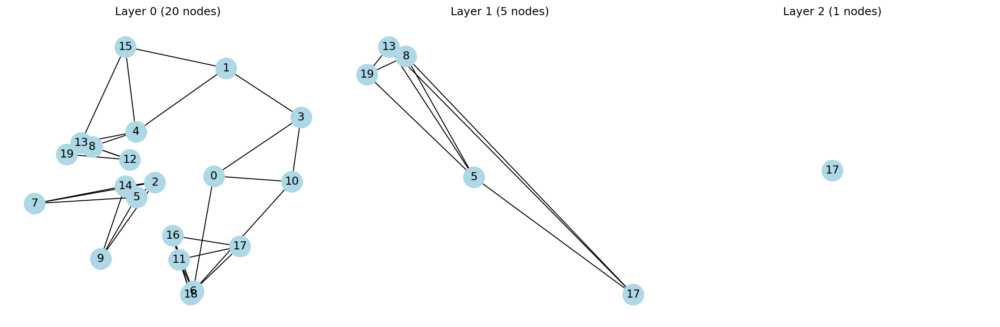

HNSW: Hierarchical Navigable Small World Graphs for Efficient Similarity Search
This post is a simple code implementation of the research paper ‘Hierarchical Navigable Small World Graphs for Efficient Similarity Search’ by Yury Malkov and D. A. Yashunin.
You’re building a feature that lets users upload an image and find visually similar ones from a database of millions. The math is straightforward — compute how “close” two image embeddings are using cosine distance, return the closest matches.
You try the naive approach: compare the query against every single image. It works perfectly on your test set of 1,000 images. Then you deploy to production with 10 million images, and each query takes 3 seconds. Users leave.
This is the nearest neighbor problem — and it shows up everywhere:
Search engines: “find documents similar to this one”
Recommendation systems: “users who liked this also liked…”
RAG pipelines: “retrieve the most relevant chunks for this question”
Brute force is O(n·d) per query — linear in the number of vectors. For small datasets it’s fine. For millions of vectors at production latency requirements, it’s a non-starter.
HNSW (Hierarchical Navigable Small World) solves this by organizing your vectors into a layered graph that you can navigate greedily — like taking highways to get close to your destination, then switching to local roads for the final stretch. Instead of checking every vector, you hop through the graph following the most promising connections.
The result: queries that are nearly as accurate as brute force (which is still the gold standard for exact nearest neighbors), but orders of magnitude faster. HNSW trades a tiny bit of accuracy for huge speed gains — a tradeoff that’s almost always worth it in production.
This article is one of our learning attempts — we built a toy HNSW implementation from scratch to understand the algorithm before using production libraries. The code is simplified for clarity, not optimized for performance.
Next, let’s understand the layered graph structure that makes this possible →
Step 1: The Data Structure
Before writing any algorithms, we need to decide how to hold all this information. HNSW organizes your data into multiple layers of a graph — each layer contains nodes (your vectors) connected to their nearest neighbors:
Layer 0 (bottom): Contains every vector, with dense local connections. This is where precise, final search happens.
Layer 1: A subset of vectors — roughly 30% reach here.
Layer 2+: Exponentially sparser. Only a few “hub” vectors live up here.
The key insight: each higher layer acts like an express lane. You start searching at the top layer (few nodes, fast traversal), navigate to the approximate region of your query, then drop down to the next layer to refine. Repeat until you reach layer 0 for the final, precise results.
Code
from collections import defaultdictclass HNSW:def__init__(self, max_neighbors, ef_construction, max_layers): store_attr()self.values = {}self.curr_id=0self.layers = {o:defaultdict(list) for o inrange(max_layers)}self.entry_point =Nonedef__repr__(self): returnf'{list(self.layers)}'ex = HNSW(3, 4, 5)ex
[0, 1, 2, 3, 4]
With that in mind, we define the class with max_neighbors, ef_construction, and max_layers parameters, storing values (vectors), per-layer adjacency lists, and a global entry point.
store_attr() (from fastcore) is a convenience that auto-assigns constructor arguments to self — here it’s equivalent to writing self.max_neighbors = max_neighbors, etc.
self.layers is a dict of dicts. Each layer maps node_id → list of neighbor node_ids:
layers[0][5] = [3, 7, 12] means “in layer 0, node 5 is connected to nodes 3, 7, and 12”
A node appears in layers[l] only if its assigned max layer is >= l
The self.values dict stores the raw vectors separately — keeping them decoupled from the graph structure makes distance calculations cleaner.
With the data structure in place, let’s see how vectors get inserted →
import numpy as np@patchdef _cosine_distance(self:HNSW, a, b):# Cosine distance measures the *angle* between two vectors, not their magnitude.# We use it (instead of Euclidean) because direction matters more than length# for high-dimensional embeddings — two vectors pointing the same way are "similar"# even if one is much longer.## Range: 0 = identical direction, 1 = perpendicular, 2 = oppositeif np.linalg.norm(a) ==0or np.linalg.norm(b) ==0: return0# cos(θ) = dot(a,b) / (|a| * |b|), then distance = 1 - cos(θ)return1- np.dot(a,b) / (np.linalg.norm(a) * np.linalg.norm(b))k,l = np.random.randn(2,3)round(ex._cosine_distance(k,l).item(), 2)
0.58
@patchdef _calc_layer(self: HNSW, item_id, layer):# Brute-force scan of all nodes in this layer — simple but O(n).# Production HNSW uses a greedy graph search here instead. nodes = [(node_id, self.values[node_id]) for node_id inself.layers[layer] if node_id != item_id]# Compute distance from our item to every other node, then sort closest-firstreturnsorted( [(node_id, self._cosine_distance(node, self.values[item_id])) for node_id, node in nodes], key =lambda x: x[1] )
@patchdef _register_item(self: HNSW, item):# Assign an ID, store the vector, and pick a random max layer item_id =self.curr_idself.values[item_id] = itemself.curr_id +=1return item_id, self._get_insert_layer()@patchdef _trim_neighbors(self: HNSW, node_id, layer):# If a node has too many neighbors, keep only the closest Miflen(self.layers[layer][node_id]) >self.max_neighbors: neighbors =self._calc_layer(node_id, layer)self.layers[layer][node_id] = [x for x, _ in neighbors[:self.max_neighbors]]@patchdef _connect_node(self: HNSW, item_id, layer):# Find M nearest neighbors in this layer and create bidirectional edges nearest =self._calc_layer(item_id, layer)[:self.max_neighbors]self.layers[layer][item_id] = [n_id for n_id, _ in nearest]for n_id, _ in nearest:self.layers[layer][n_id].append(item_id) # reverse edgeself._trim_neighbors(n_id, layer) # keep degree ≤ M@patchdef add_items(self: HNSW, items):for item in items: item_id, max_layer =self._register_item(item)# Track the highest node as the global entry pointifself.entry_point isNone: self.entry_point = (item_id, max_layer)ifself.entry_point andself.entry_point[1] < max_layer: self.entry_point = (item_id, max_layer)# Connect this node in every layer it belongs tofor layer inrange(max_layer +1):self._connect_node(item_id, layer)
# ---- Test the graph structure after insertion ----h = HNSW(max_neighbors=3, ef_construction=4, max_layers=5)vecs = [np.array([1,0,0], dtype=float), np.array([0,1,0], dtype=float), np.array([0,0,1], dtype=float)]h.add_items(vecs)# Every vector we inserted should be storedassertlen(h.values) ==3, "All vectors should be stored in values dict"# All nodes should appear in layer 0 (the base layer contains everything)assert0in h.layers[0]assert1in h.layers[0]assert2in h.layers[0]# Degree constraint: no node should exceed max_neighbors in any layerfor layer in h.layers.values():for node_id, neighbors in layer.items():assertlen(neighbors) <= h.max_neighbors, f"Node {node_id} has too many neighbors"# Identical vectors should be nearest neighbors (distance ≈ 0)h2 = HNSW(3, 4, 5)h2.add_items([np.array([1,0,0], dtype=float), np.array([1,0,0], dtype=float)])dists = h2._calc_layer(1, 0)assert dists[0][1] <1e-6, "Identical vectors should have ~0 distance"
Step 2: Building the Graph — Insertion
When a new vector arrives, we need to figure out which layers it belongs to and connect it to its nearest neighbors in each of those layers.
How does a node get assigned to layers?
Each node’s maximum layer is drawn randomly from a geometric distribution:
where \(\text{avg\_layer} = 1 / \ln(M)\) normalizes the distribution. Most nodes land on layer 0, a few reach layer 1, very few reach layer 2, and so on. The result is clamped to max_layers - 1.
Connecting a node at each layer
At each layer, we find the M closest existing nodes, create bidirectional edges, and trim any neighbor list that exceeds M.
Putting it all together
For each item, we register it (assign ID + random layer), update the global entry point if this node reaches a new highest layer, then connect it in every layer it belongs to.
Note on _calc_layer: In our v1, this does a brute-force scan of all nodes in the layer to find the nearest ones. The real HNSW uses a greedy graph search (guided by ef_construction) here, which is what makes it scalable to millions of vectors. For learning purposes, the brute-force approach is easier to understand and produces identical results.
The key insight of insertion: a node that lands on layer 0 only has dense local connections. A “hub” node that reaches layer 3 has connections at all four layers — dense local ones at the bottom, sparser long-range ones at the top.
With nodes inserted and connected, let’s see how search navigates this graph →
import networkx as nximport matplotlib.pyplot as pltdef visualize_hnsw(h): active_layers = [l for l, nodes in h.layers.items() iflen(nodes) >0] fig, axes = plt.subplots(1, len(active_layers), figsize=(5*len(active_layers), 5))iflen(active_layers) ==1: axes = [axes]for ax, layer_id inzip(axes, active_layers): G = nx.Graph() layer = h.layers[layer_id]for node_id, neighbors in layer.items(): G.add_node(node_id)for n in neighbors: G.add_edge(node_id, n) pos = {node_id: h.values[node_id][:2] for node_id in G.nodes()} # use first 2 dims as coords nx.draw(G, pos=pos, ax=ax, with_labels=True, node_color='lightblue', node_size=500) ax.set_title(f'Layer {layer_id} ({len(layer)} nodes)') plt.tight_layout() plt.show()# Build a small index to testh = HNSW(max_neighbors=3, ef_construction=4, max_layers=5)np.random.seed(42)vecs = np.random.randn(20, 2) # 2D vectors so we can plot positions directlyh.add_items(vecs)visualize_hnsw(h)
@patchdef _search_layer(self: HNSW, query, enode, layer): visited = {enode}# candidates = min-heap to pick next node to explore (closest first)# results = max-heap (negated) to track best found; capped at ef_construction## Python's heapq only provides a min-heap, so to get a max-heap we negate# the distance values. This is why results uses (-d, node) while# candidates uses (d, node) — candidates wants smallest-first (min),# results wants largest-first (max) so we can efficiently evict the worst. candidates, results = [], [] d0 =self._cosine_distance(self.values[enode], query) heappush(candidates, ( d0, enode)) # min-heap: explore closest first heappush(results, (-d0, enode)) # max-heap (negated): evict farthest firstwhile candidates: d, c = heappop(candidates)if d >-results[0][0]: break# early stop: no better candidates existfor nei inself.layers[layer][c]:if nei notin visited: visited.add(nei) d_nei =self._cosine_distance(self.values[nei], query) heappush(candidates, ( d_nei, nei)) heappush(results, (-d_nei, nei))whilelen(results) >self.ef_construction: heappop(results) # evict worst resultreturn [o[1] for o insorted(results, key=lambda x: x[0], reverse=True)]
Now the fun part — how do we actually find nearest neighbors?
The search strategy mirrors how you navigate a city with highways: start on the express lanes, get close to your destination, then switch to local roads for precision.
Single-layer search: greedy expansion
At each layer, the algorithm greedily explores neighbors, always picking the most promising unvisited node:
Two data structures work together: - Candidates (min-heap): nodes we still need to explore, ordered by distance. We always expand the closest one first. - Results (max-heap, size ≤ ef): the best candidates found so far. The max-heap lets us efficiently evict the worst result when we exceed ef.
The early stopping condition (d > -results[0][0]) is the key efficiency trick: if the closest unexplored candidate is already farther than the worst node in our results, there’s no point exploring further — nothing better can be found.
Multi-layer traversal
The outer search method ties it all together: start at the top layer using the entry point, run _search_layer with ef=1 to find the single best node, pass it down as the entry point for the next layer, and repeat until layer 0 where you use the full ef to get the final results.
The highway analogy in action: Layers 3, 2, 1 are like highway → arterial → collector roads, getting progressively closer to your destination. Layer 0 is the local street search where you check every nearby house.
With the algorithm built, let’s verify it actually works →
# ---- Verify search results against brute-force ground truth ----# If HNSW is correct, its top-k results should match brute force on small datasets.h = HNSW(max_neighbors=3, ef_construction=10, max_layers=5)np.random.seed(45)vecs = np.random.randn(20, 2)h.add_items(vecs)# Query with a vector already in the index — node 5 should be its own nearest neighbor (distance ≈ 0)query = vecs[5]results = h.search(query)print("Query is node 5")print("HNSW results:", results)# Ground truth: compute distance from query to every vector and sortdists = [(i, h._cosine_distance(vecs[i], query)) for i inrange(20)]brute_force =sorted(dists, key=lambda x: x[1])print("Brute force top 5:", brute_force[:5])
Query is node 5
HNSW results: [13, 16, 12, 18, 6, 11]
Brute force top 5: [(5, np.float64(0.0)), (17, np.float64(0.003778046846526384)), (0, np.float64(0.012983531985285679)), (4, np.float64(0.10358430447751887)), (13, np.float64(0.1624952825505933))]
Step 4: Verification — Does It Actually Work?
Building an algorithm is only half the battle — you need to verify it’s correct before trusting it.
Brute-force baseline
The simplest “ground truth” is to compute cosine distance between the query and every vector, then sort by distance. We ran both on a 20-vector index with a known query:
A perfect match. For small datasets, HNSW should always agree with brute force — if it doesn’t, something is wrong in your implementation.
When will they disagree? As datasets grow larger and you add optimizations (greedy insertion, approximate search with lower ef), HNSW becomes approximate — it may miss some true nearest neighbors. The tradeoff is speed vs. recall, and tuning ef lets you control it.
Visualizing the layers
To check the graph structure looks right, we plotted each layer using networkx:

HNSW Layer Visualization
What to look for: - Layer 0 should have all 20 nodes with dense, local connections - Layer 1 should have ~6-8 nodes with sparser connections - Layer 2 should have just 2-3 nodes — the “highway” express lanes
Quick sanity checks we ran during development: - Identical vectors → distance ≈ 0 ✓ - Orthogonal vectors → distance ≈ 1 ✓ - No node has more neighbors than max_neighbors ✓ - Entry point always sits on the highest occupied layer ✓
Next, let’s talk about what we’d improve for a production-ready version →
What’s Next: From Toy to Production
Our v1 implementation works for learning, but has several limitations that production libraries like hnswlib and faiss address:
1. Greedy insertion (not brute force)
Our _calc_layer scans every node in a layer to find nearest neighbors — that’s O(n) per insertion. The real HNSW uses _search_layer (the same greedy graph traversal used for search) guided by ef_construction to find candidates. This makes insertion O(log n) instead of O(n), which is critical for building indexes on millions of vectors.
# What we have (brute force):def _calc_layer(self, item_id, layer):returnsorted([(nid, self._cosine_distance(...))for nid inself.layers[layer]], ...)# What production HNSW does (greedy):# Uses _search_layer to find candidates, then connects to top-M
2. Separate ef for search vs construction
ef_construction (used during build) and ef (used during search) should be independent parameters. Higher ef at search time means better recall (more accurate results) but slower queries. You can tune this tradeoff after building the index — build once with high ef_construction, then adjust ef at query time.
3. Thread safety and memory layout
Production libraries use contiguous memory arrays instead of Python dicts, SIMD instructions for distance calculations, and careful locking for concurrent inserts/queries. Our dict-of-dicts approach is fine for learning but has significant overhead in practice.
4. Quantization
Libraries like faiss support scalar quantization or product quantization — compressing vectors to use less memory and faster distance computations, at a small accuracy cost. This is essential when your index doesn’t fit in RAM.
5. Batch operations
Inserting or querying vectors one at a time leaves performance on the table. Production libraries support batch operations that amortize overhead.
Key takeaway: the algorithm we built is the same one these libraries use internally. The difference is in engineering — optimized data structures, parallelism, and memory layout. Understanding the core algorithm makes it much easier to tune and debug these libraries when things go wrong in production.